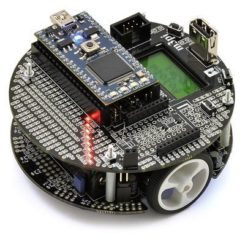

Technology campus Ostend Vives & KU Leuven
- Piet Cordemans
- Hans Hallez
- Nico De Witte
- Sille Van Landschoot
About us
Electronics - ICT
- Professional bachelor - VIVES
- Master - KU Leuven


Goal
Program the robot and make the fastest lap
Learn some programming concepts along the way
Hardware
M3PI robot
Purpose: line follow robot
- 2 motors (left & right)
- 1m/s
- 2 microcontrollers
- 5 reflective sensors
- LCD display
- LEDs
- etc.
Software
Mbed.org
- Development environment in the browser
- Programming language: C++
- Simplified interface
How to start
- Create your own account
- Import the Racing Robots libary
- Create a main file
main.cpp
#include "robot_logic.h"
void init()
{
//This is a comment: put your initialization logic here
}
void loop()
{
/*This is a comment too: put your robot control logic here*/
}
Remark: text is case sensitive. "Loop" does not equal "loop".
Step 1: Blink LED's
Functions
A function executes a number of pre-defined instructions.
Optionally a function takes input: parameters
Also optionally a function returns output
Declaration
In robot_logic.h a function is declared to control the LEDs
/**
* Turn on, off or toggle a specific LED
* @param i the LED number LED_0 .. LED_7
* @param state the LED state LED_ON, LED_OFF, LED_TOGGLE
* @example led(LED_0, LED_ON); turns LED 0 on.
*/
void led(LedIndex i, LedState state);
- void is the return type. void indicates nothing is returned
led is the name of the function- Everything between the parentheses are the parameters
- led expects two parameters
- A LedIndex e.g. LED_1
- A LedState e.g. LED_ON
Calling a function
The led function to turn on LED 1 is called this way:
led(LED_1, LED_ON);
- The name of the function that is called
- All necessary parameters are provided between parentheses
Blinking LED
In order to let a LED blink, it is repeatedly turned on and off
This code is placed in the loop
loop
{
led(LED_1, LED_ON);
led(LED_1, LED_OFF);
}
- Press the compile button to compile the code into an executable
- Save the bin file on the mbed flash drive
- Press the reset button and watch
Why is it not blinking?
loop
{
led(LED_1, LED_ON);
led(LED_1, LED_OFF);
}
Processors are incredibly fast. These instructions are executed so fast, the human eye is not able to track the changing state.
We need to slow down the processor with the await() function.
Loop leds
Turn all leds on and off consecutively.
Step 2: Drive forward / backward
Drive function
/**
* Drive the robot forward or backward.
* If the robot was turning it will stop turning
* and drive in a straight line.
*
* @param speed
* The speed percentage with
* which to drive forward or backward.
* Can range from -100 (full throttle backward)
* to +100 (full throttle forward).
*/
void drive(int speed);
Only needs to be called once, unless you want to change speed.
The stop() function will stop the robot.
Change speed
Variables are typed names to which values are assigned. E.g.
int speed = 0; //speed == 0
speed = 50; //speed == 50
speed = speed + 50; //speed == 100
speed -= 25; //speed == 75
- int is the type of the variable, in this case an integer
- Basic arithmetic can be applied to integers
- Addition +
- Substraction -
- Multiplication *
- Division /
Speed up in steps
Instead of immediately going full throttle, build up speed in steps
Step 3: Turning
Turn function
/**
* Turn the robot left or right while driving.
*
* @param turnspeed
* The percentage with which to turn the robot.
* Can range from -100 (full throttle left)
* to +100 (full throttle right).
*/
void turn(int turnspeed);
Note: First you have to set a speed before you can turn in a direction
Turn left and right
- Drive forward
- Turn left
- Drive backward
- Turn right
- Stop
Step 4: Sensors
Line detection
The M3PI robot has five reflective sensors which can detect a black line contrasting with a background
- Calibrate the sensors: sensor_calibrate()
- Read the sensor value: line_sensor()
Note: you only need to calibrate the sensor once
show_stats() will put the sensor value on the LCD display
Reading the sensors
Manually hover the robot over the line
Read the sensor values
Step 5: Line follower
Following the line
In order to follow the line the robot must be driven towards the line
- Drive forward
- Read sensor values
- Determine if you need to adjust by turning left or right
- Turn towards the line
- Repeat from step 2
Decisions
The if/else structure allows to take decisions in the code
if(condition){
//do something
}
else {
//do something else
}
When the condition is true the first part is executed, when it is false the second part is executed instead.
Boolean conditions
- Equals: x == y
- Does not equal: x != y
- Greater than: x > y
- Greater or equal: x >= y
- Less than: x < y
- Less or equal: x <= y
Try to follow the line
Step 6: PID control
Following the line
It's not easy to control the robot to follow the line
A field in engineering is specialised in control theory
Feedback loop

PID controller

PID
- Proportional (P)
- Depends on the present error
- Integral (I)
- Accumulation of past errors
- Derivative (D)
- Prediction of future errors
P,I and D need to be tuned
PID functions
void pid_init(int p, int i, int d);
int pid_turn(int line_position);
- pid_init() initializes the P, I and D values
- pid_turn() input line position and outputs a turn value
PID control
- Initialize the PID
- Read the sensor value
- Give the PID controller the sensor value
- The PID controller returns the turn speed
- Adjust the robot with the calculated turn speed